The branch's Dev build (an isolated bundle) ran against a branch lf server on a private home: first a fenced copy of the live store, for Task c9fbcb itself, then a disposable repository and Task (57e933) whose working tree was edited one scenario at a time. Synthetic clicks, keys and scrolls are blocked for this shell, so the app was driven through lf desktop and captured with screencapture -l.
lf task file --at (CLI)lf task file c9fbcb swift/LoopflowMac/SyntaxColors.swift --at parent --json → text / content / "A committed version is read-only." / 0 recoveries lf task file c9fbcb swift/LoopflowMac/SyntaxColors.swift --json → missing lf task file c9fbcb swift/LoopflowMac/dmg-background.png --json → binary, data 13,872 base64 chars, size_bytes 10,404 lf task file c9fbcb nosuch.txt --at nonsense → Error: Comparison must be parent, head, or a resolved commit SHA
Fixed: --at names a version, not a comparison. The message now reads "A revision must be parent, head, or a resolved commit SHA" (snapshot.rs).
Packaging the bundle failed with "Third-party inputs changed": swift/Package.swift (the grammar archive checksum) had changed without scripts/third_party.py refresh, so any app packaging on this branch would fail. Fixed by refreshing ThirdPartyNotices/inventory.json; test_third_party.py passes.
197 changes in 91 files. The tour puts swift/README.md first; it opens rendered with a Source button.
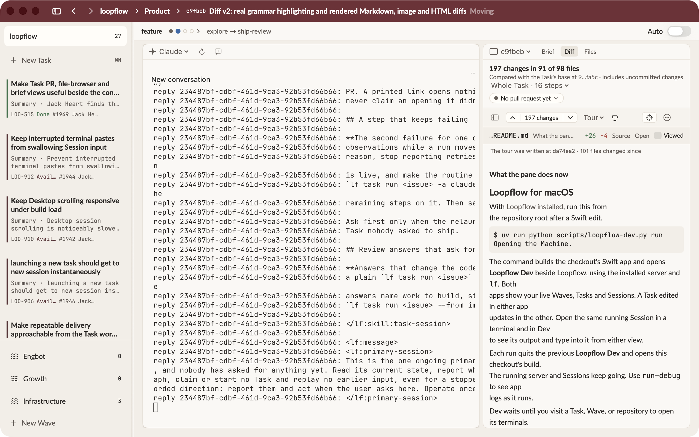
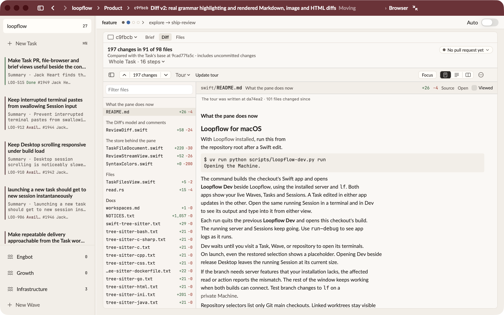
A heading edit, a reworded sentence, an inserted paragraph and a deleted table row. Added words are filled, the new paragraph is filled with a bar beside it, and the removed row is struck in the removed tone.
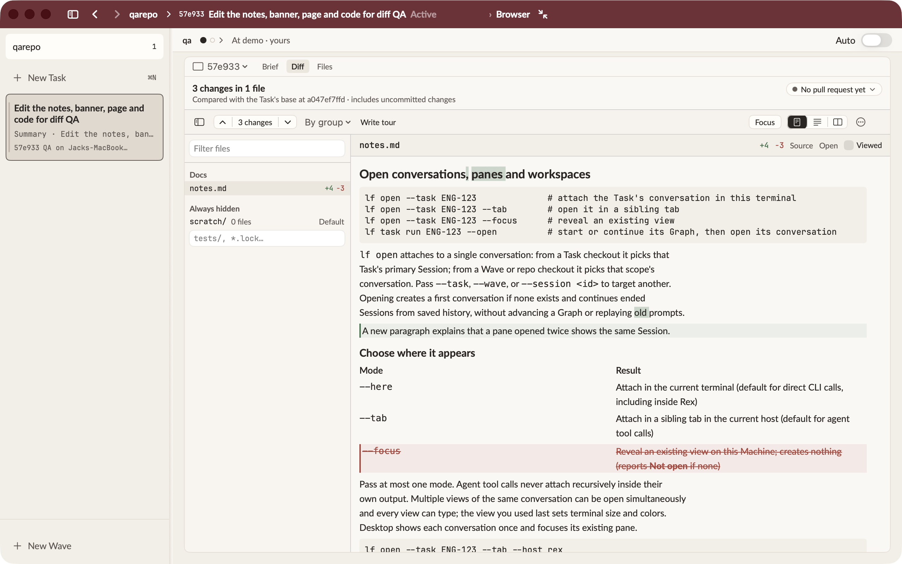
The layout picker is in-memory state with no control command, so this was a throwaway build defaulting to Side by side (reverted). Old on the left, new on the right, aligned pair by pair.
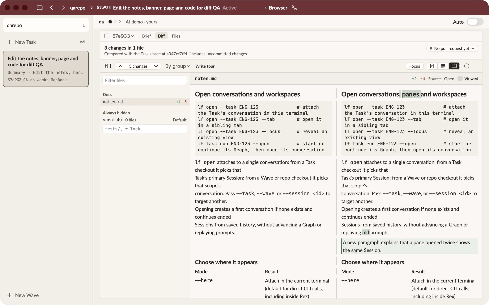
Before: only the old picture showed, filling the visible pane; the new one was stacked below the fold. ViewThatFits measured the HStack at its ideal width, which for a resizable image is its natural size (1320 pt), so any image wider than about half the pane fell back to stacking. A muted backing also letterboxed the picture.
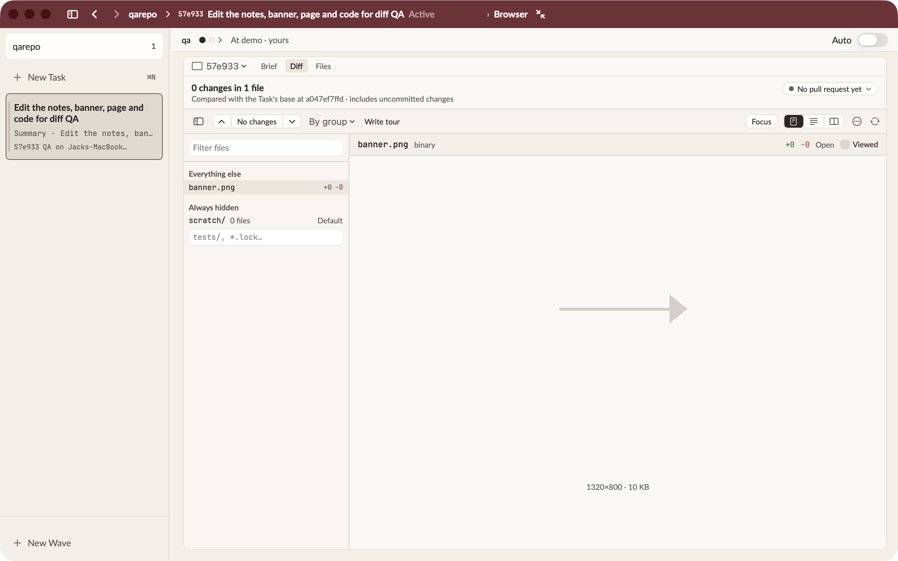
Fixed in ReviewRenderedView.swift: each side has no ideal width, so only the pane's 640 pt decides; the picture takes its height from its width, so its backing hugs it. Old (1320×800) beside new (rotated, 800×1320; caption below the fold).
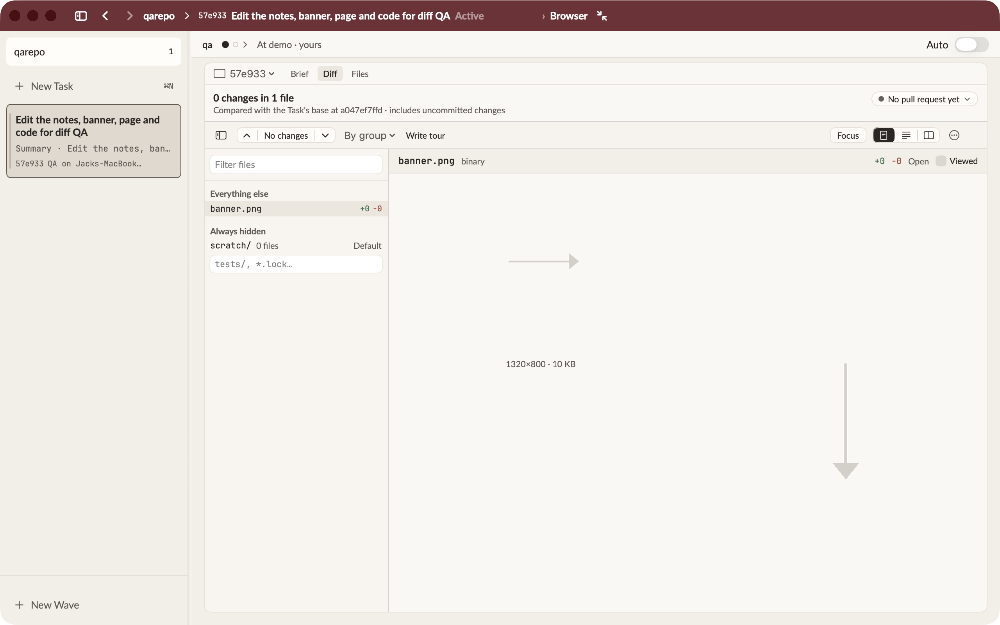
Two live pages, offline: the remote <img> shows only its alt text.
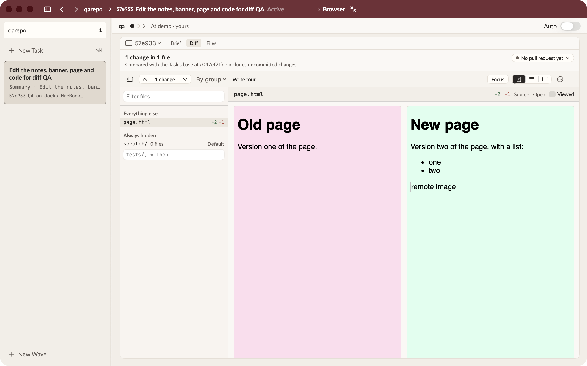
The hunk starts inside a docstring; line 7 reads as a string because colors come from the whole file. Keywords, numbers, strings and the comment each have their own ink.
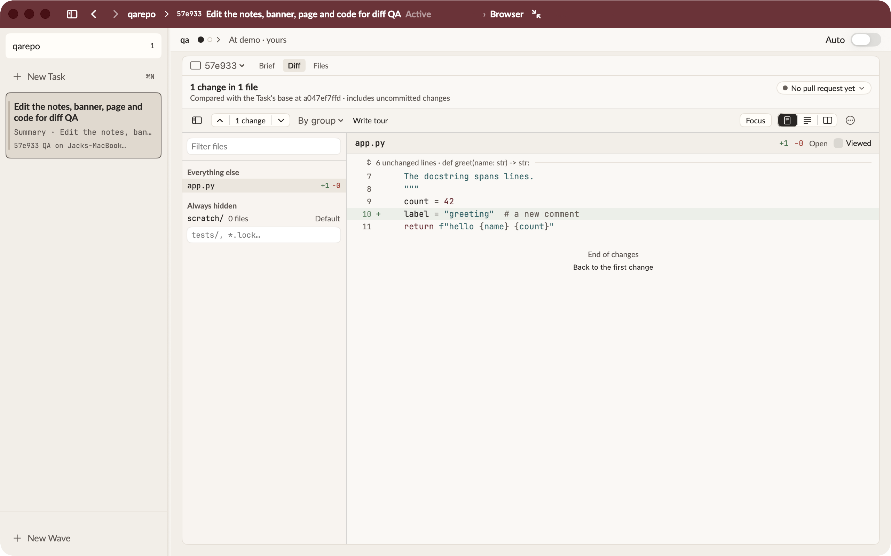
Keywords, types, properties and calls are colored; comments sample at (102,95,89) against (41,38,36) for plain text. banner.png opens as a picture with its size.
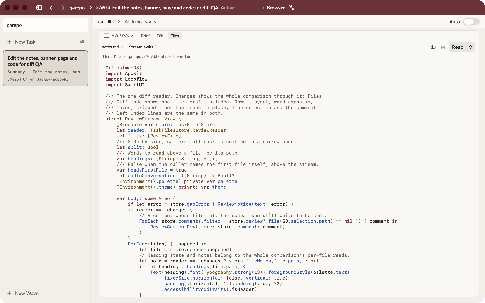
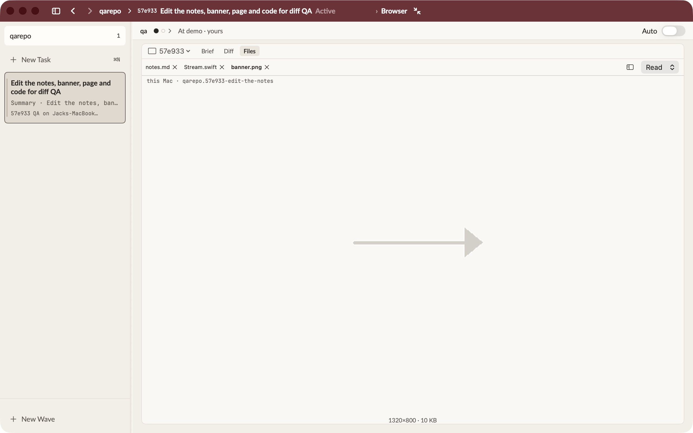
Twice, after git checkout of one file plus an edit to another, the file list stayed on the old file (its sides read again, so here both pages show "Old page") until the next file event. The server's task.changes answered correctly at 150 ms. This branch doesn't touch the watcher path.
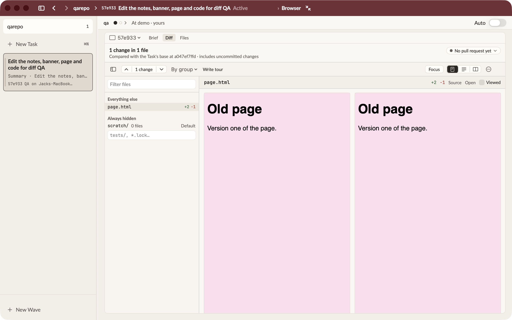
| Check | Result |
|---|---|
swift test --filter 'GrammarTests|MarkdownRedlineTests|TaskFilesTests' | 60 tests in 3 suites passed |
uv run pytest python/tests/test_third_party.py | 9 passed |
| Linear from the copied store | 14 requests, all failed at the proxy, 0 mutations |
lf task file --at, missing, and binary with data.aStepOpensSkippedLinesFromItsHeadCommit).theEditorColorsByGrammarAsYouType covers it.